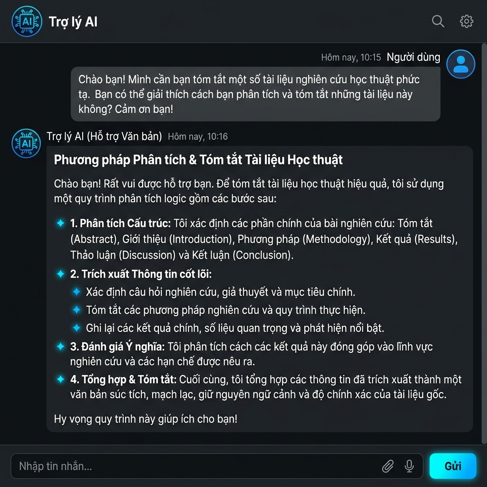
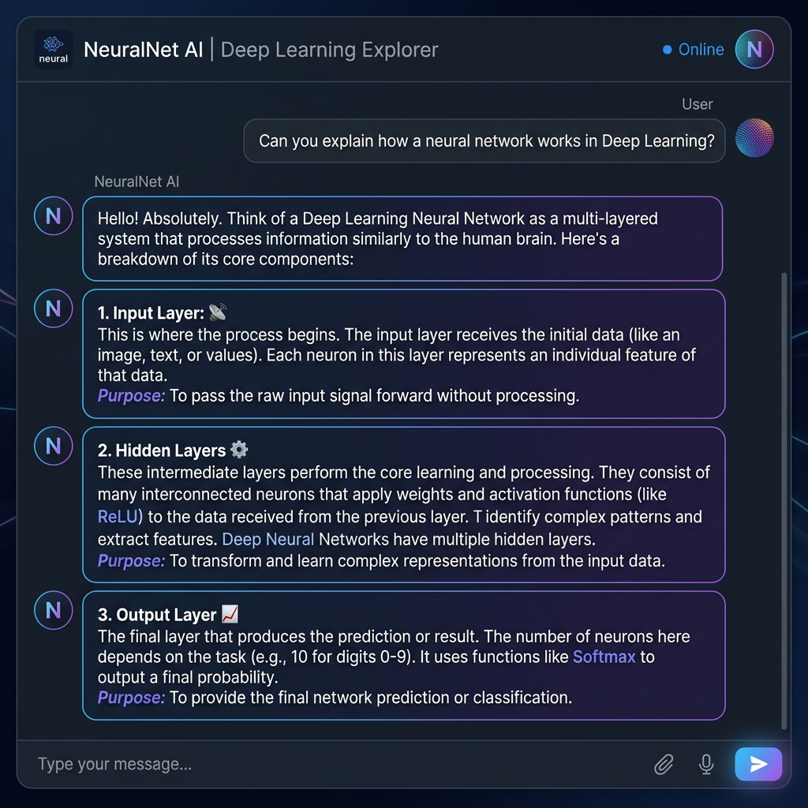
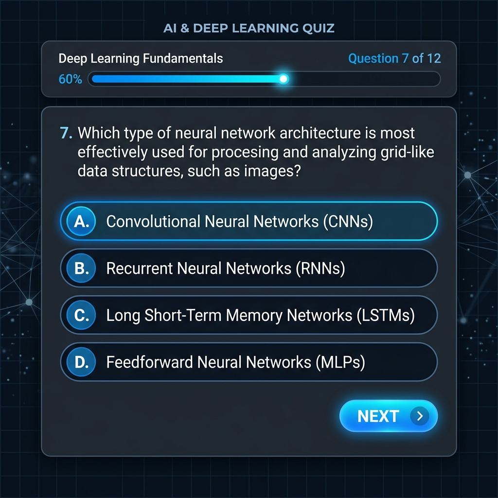
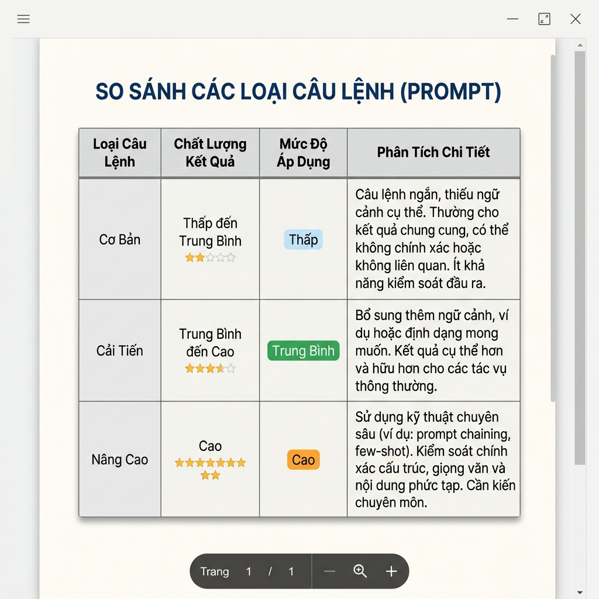

Kỹ năng viết Prompt không chỉ là cách "hỏi" — mà là cách "lập trình ngôn ngữ" để tối ưu hóa trí tuệ nhân tạo.
Khám Phá NgayNghiên cứu thực nghiệm về cách viết Prompt hiệu quả, áp dụng vào 3 tác vụ học tập cụ thể tại Trường Đại học Việt Nhật.
Phân tích và so sánh hiệu quả giữa các cấp độ Prompt: Cơ bản, Cải tiến và Nâng cao trong bối cảnh học tập.
Thực nghiệm trực tiếp trên các nền tảng AI, áp dụng các kỹ thuật Role Prompting, Chain-of-Thought và Few-shot Learning.
Tiết kiệm đến 50% thời gian nghiên cứu tài liệu và ôn tập khi sử dụng Prompt nâng cao so với Prompt cơ bản.
Ba tác vụ học tập được lựa chọn để đánh giá hiệu quả của các kỹ thuật viết Prompt khác nhau.
Sử dụng AI để tóm tắt các bài đọc về kiến trúc máy tính, tập trung vào chip ARM và các khái niệm then chốt cho sinh viên năm nhất.
Ứng dụng phương pháp ẩn dụ (Analogy) và Chain-of-Thought để giải thích mạng thần kinh nhân tạo từ ví dụ đời thường đến lý thuyết chuyên sâu.
Tự động hóa việc tạo câu hỏi trắc nghiệm về Tích phân bội với đáp án và giải thích chi tiết, áp dụng kỹ thuật Few-shot Examples.
Từ cơ bản đến nâng cao — mỗi cấp độ Prompt mang lại chất lượng đầu ra khác nhau rõ rệt.
So sánh 3 cấp độ Prompt cho tác vụ tóm tắt tài liệu
Từ câu hỏi đơn giản đến Chain-of-Thought Prompting
Kỹ thuật Few-shot Examples mang lại kết quả chính xác nhất
Tổng hợp đánh giá chất lượng đầu ra từ 3 cấp độ Prompt qua các tiêu chí khác nhau.
| Loại Prompt | Chất lượng đầu ra | Khả năng ứng dụng | Phân tích lý do hiệu quả |
|---|---|---|---|
|
Cơ bản
|
Chung chung, thiếu chiều sâu. | AI không có đủ ngữ cảnh nên phản hồi theo cách an toàn và sơ sài nhất. | |
|
Cải tiến
|
Đi đúng hướng, đủ thông tin. | Có ràng buộc về độ dài và mục tiêu giúp AI tập trung hơn. | |
|
Nâng cao
|
Chuyên nghiệp, đúng văn phong, dễ hiểu. | Việc áp dụng Role (Vai trò) và Structure (Cấu trúc) giúp AI "đóng vai" chuyên gia, tạo ra nội dung phù hợp tối đa với người dùng. |
5 nguyên tắc vàng được rút ra từ quá trình thực nghiệm để viết Prompt hiệu quả.
Luôn bắt đầu bằng "Bạn là một chuyên gia về...", "Bạn là giáo viên...". Điều này giúp AI hiểu ngữ cảnh và điều chỉnh văn phong, độ sâu của phản hồi.
Thay vì "Làm giúp tôi", hãy nói "Lập danh sách", "Viết mã nguồn", "Tạo bảng". Càng cụ thể, kết quả càng chính xác.
Cho AI biết đối tượng đọc là ai — sinh viên, trẻ em, hay chuyên gia — để nhận được phản hồi phù hợp nhất.
Yêu cầu AI "suy nghĩ từng bước một" (Think step by step) để tránh sai sót trong logic toán học hoặc lập trình.
Đưa ra 1–2 mẫu kết quả bạn muốn để AI học theo định dạng đó. Kỹ thuật này đặc biệt hiệu quả khi cần đầu ra có cấu trúc chuẩn.
Ảnh chụp màn hình quá trình thực nghiệm với Gemini AI trên các tác vụ học tập.

Sử dụng Gemini AI để tóm tắt tài liệu học thuật với Role Prompting

Áp dụng Chain-of-Thought để giải thích mạng nơ-ron nhân tạo

Few-shot Examples tạo quiz trắc nghiệm Deep Learning

Đánh giá chất lượng đầu ra từ 3 cấp độ Prompt khác nhau
Kỹ năng viết Prompt không chỉ là cách "hỏi", mà là cách "lập trình ngôn ngữ" để tối ưu hóa trí tuệ nhân tạo. Việc làm chủ Prompt giúp tiết kiệm 50% thời gian nghiên cứu tài liệu và ôn tập tại VJU.
"Prompt Engineering là kỹ năng thiết yếu của thế kỷ 21 — nơi ngôn ngữ trở thành công cụ lập trình mạnh mẽ nhất."